Basic workflow: from cell phase inference to rhythm-state modules
Source:vignettes/basic-workflow.Rmd
basic-workflow.RmdOverview
scRhythmBayes is designed for phase-resolved circadian
analysis of heterogeneous single-cell transcriptomic data.
This tutorial demonstrates the basic workflow using the built-in example dataset. The workflow follows three core analysis layers:
Cell-level circadian phase inference
Infer a latent circadian phase for each cell.Gene-level rhythmic parameter inference
Estimate rhythmic parameters, including mesor, mean expression, amplitude, phase, dropout rate, likelihood-ratio statistics, and FDR.Differential rhythm-state module analysis
Classify genes into interpretable rhythm-state remodeling modules between two biological groups.
The main example compares condition A versus condition
B within one cell type. This is the recommended starting
point for two-condition rhythm-state remodeling analysis. The tutorial
also shows how the same module framework can compare two cell types when
gene-level parameters are estimated by celltype.
Extension analyses, including one-vs-rest rhythmic program discovery, DTW-based phase-distribution similarity, and circular phase-concentration rho analysis, are introduced briefly at the end and described in separate tutorials.
Load example data
scRhythmBayes includes a simulated example dataset for
testing the complete workflow.
The example object contains a gene-by-cell count matrix and cell-level metadata.
dim(srb_example_data$Count)
#> NULL
class(srb_example_data$Count)
#> [1] "dgCMatrix"
#> attr(,"package")
#> [1] "Matrix"
dim(srb_example_data$meta)
#> [1] 2160 10
head(srb_example_data$meta)
#> cell sample replicate ZT celltype condition
#> Cell_0001_001 Cell_0001_001 A_ZT00_R1 1 0 1 A
#> Cell_0001_002 Cell_0001_002 A_ZT00_R1 1 0 1 A
#> Cell_0001_003 Cell_0001_003 A_ZT00_R1 1 0 1 A
#> Cell_0001_004 Cell_0001_004 A_ZT00_R1 1 0 1 A
#> Cell_0001_005 Cell_0001_005 A_ZT00_R1 1 0 1 A
#> Cell_0001_006 Cell_0001_006 A_ZT00_R1 1 0 1 A
#> T_true Theta_true Theta_noisy r_sim
#> Cell_0001_001 23.7745644 6.22416640 6.0883578 0.7240322
#> Cell_0001_002 23.7111107 6.20755425 6.0324486 0.6303893
#> Cell_0001_003 22.2182691 5.81672924 5.8263271 0.8666633
#> Cell_0001_004 0.5581621 0.14612650 0.2245110 0.8593562
#> Cell_0001_005 0.7203817 0.18859549 0.3327113 0.6901345
#> Cell_0001_006 0.1788832 0.04683152 0.1722017 0.7564754The two main input objects are:
| Object | Description |
|---|---|
srb_example_data$Count |
Gene-by-cell sparse count matrix |
srb_example_data$meta |
Cell-level metadata |
The metadata contains:
| Column | Description |
|---|---|
cell |
Cell identifier |
sample |
Independent biological sample |
replicate |
Replicate within condition and ZT |
ZT |
Sampling Zeitgeber time |
celltype |
Cell-type label |
condition |
Condition or group label |
T_true |
Simulated true circadian time in hours |
Theta_true |
Simulated true circadian phase in radians |
Theta_noisy, r_sim
|
Simulated noisy phase truth retained for validation |
T_true and Theta_true are available only in
the simulated example dataset. Real single-cell datasets usually do not
contain these two columns.
For convenience, define the input count matrix and metadata:
count <- srb_example_data$Count
metadata <- srb_example_data$metaChoosing the analysis design
Before running gene-level rhythmic parameter inference, users should
define the biological comparison of interest. In
scRhythmBayes, the same core framework can support several
common designs.
| Analysis goal | Recommended design | Parameter grouping | Downstream analysis |
|---|---|---|---|
| Compare two conditions within one cell type | Subset one cell type, then compare conditions | strata_by = "condition" |
infer_rhythm_module(group1 = "A", group2 = "B") |
| Compare two cell types directly | Use all relevant cells, then estimate parameters by cell type | strata_by = "celltype" |
infer_rhythm_module(group1 = "1", group2 = "2") |
| Identify cell-type-specific rhythmic programs | Estimate parameters by cell type | strata_by = "celltype" |
infer_ovr_rhythm() |
| Compare phase distributions across cell types and conditions | Use cell-level phase result and metadata | not required |
run_dtw_similarity() or
run_phase_rho()
|
The recommended starting point is a two-condition comparison within one biologically defined cell type. This design is usually the clearest setting for interpreting differential rhythm-state modules.
A direct cell-type comparison and a one-vs-rest analysis answer
different questions. A direct module comparison tests one selected pair,
such as cell type 1 versus cell type 2. A
one-vs-rest analysis identifies target-specific rhythmic programs by
comparing each target cell type against all remaining cell types.
Step 1: infer cell-level circadian phase
Input
The phase inference step requires:
| Argument | Description |
|---|---|
count |
Gene-by-cell count matrix |
metadata |
Cell-level metadata |
ZT_by |
Column containing sampling Zeitgeber time |
strata_by |
Column defining strata for phase inference, such as cell type |
Species |
Species used for selecting default seed rhythmic genes |
Run phase inference
res_phase <- infer_cell_phase(
count = count,
metadata = metadata,
ZT_by = "ZT",
strata_by = "celltype",
Species = "mouse",
setseed = 1,
Verbose = TRUE
)
head(res_phase)
#> # A tibble: 6 × 7
#> cell ZT_input stratum theta_pred ZT_pred Rbar r_cell
#> <chr> <dbl> <chr> <dbl> <dbl> <dbl> <dbl>
#> 1 Cell_0001_001 0 1 6.19 23.6 0.992 0.999
#> 2 Cell_0001_002 0 1 6.23 23.8 0.991 0.999
#> 3 Cell_0001_003 0 1 6.00 22.9 0.991 0.999
#> 4 Cell_0001_004 0 1 6.14 23.4 0.989 0.999
#> 5 Cell_0001_005 0 1 0.142 0.543 0.992 0.999
#> 6 Cell_0001_006 0 1 0.137 0.524 0.991 0.999Output
The output contains one row per cell.
| Column | Description |
|---|---|
cell |
Cell identifier |
ZT_input |
Observed sampling Zeitgeber time |
stratum |
Stratum used during phase inference |
theta_pred |
Inferred cell-level circadian phase in radians |
ZT_pred |
Inferred cell-level circadian phase converted to 24-hour time |
Rbar |
Aggregate phase concentration statistic |
r_cell |
Cell-level phase reliability weight |
The inferred cell phase is used as the latent temporal coordinate for downstream gene-level rhythmic parameter estimation.
Phase diagnostic plots
If simulated true time is available, inferred phase can be compared against the known true time.
p_phase <- plot_phase_scatter(
res_phase = res_phase,
metadata = metadata,
truth_by = "T_true",
pred_by = "ZT_pred"
)
p_phase$plot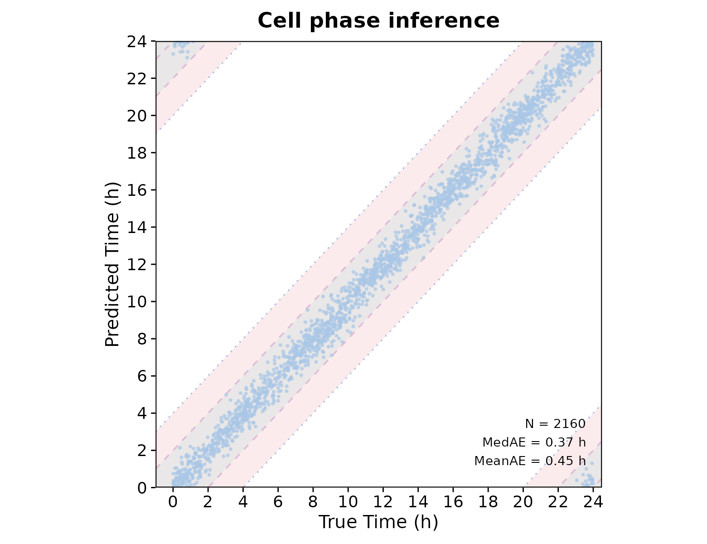
For real datasets, true phase is usually unknown. In that case, circular phase distributions can be inspected by condition or cell type.
p_circle_condition <- plot_phase_circle(
res_phase = res_phase,
metadata = metadata,
group_by = "condition",
theta_by = "theta_pred"
)
p_circle_condition$plot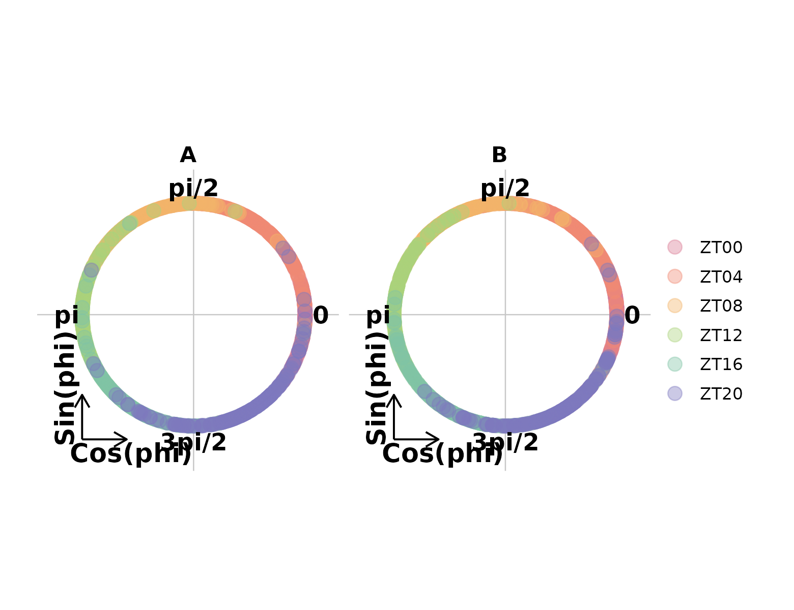
p_circle_celltype <- plot_phase_circle(
res_phase = res_phase,
metadata = metadata,
group_by = "celltype",
theta_by = "theta_pred"
)
p_circle_celltype$plot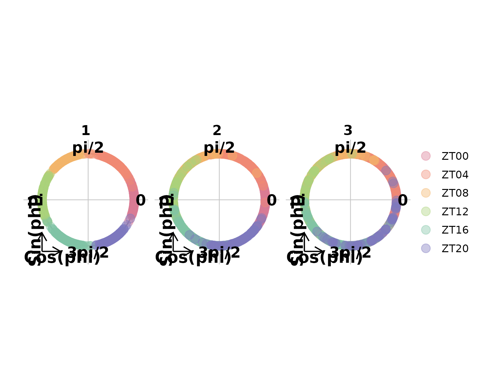
Step 2: select one cell type for two-condition comparison
The core module workflow is designed for a defined two-group
comparison. In this example, we compare condition A and
condition B within cell type 1.
cell_use <- as.character(metadata$celltype) == "1"
count_use <- count[, cell_use, drop = FALSE]
metadata_use <- metadata[cell_use, , drop = FALSE]
res_phase_use <- res_phase[cell_use, , drop = FALSE]
dim(count_use)
#> [1] 138 720
table(metadata_use$condition)
#>
#> A B
#> 360 360This design mirrors a typical biological analysis where rhythmic remodeling is tested within a defined cell type or tissue compartment.
Step 3: estimate gene-level rhythmic parameters
Input
The gene-level model requires:
| Argument | Description |
|---|---|
count |
Gene-by-cell count matrix for the selected analysis subset |
metadata |
Metadata for the selected cells |
theta_pred |
Inferred cell-level phase |
r_cell |
Cell-level phase reliability weight |
strata_by |
Grouping variable for parameter estimation |
sample_by |
Independent biological-sample column |
sample_boot_by |
Optional sample-bootstrap stratum, here ZT |
For condition-level module analysis within one cell type, use
strata_by = "condition". For cell-type-level comparison,
use strata_by = "celltype" on the full dataset or a larger
subset. Supplying sample_by = "sample" prevents cells from
the same sample being treated as independent biological replicates.
Run condition-level rhythmic parameter inference
res_param <- infer_gene_param(
count = count_use,
metadata = metadata_use,
theta_pred = res_phase_use$theta_pred,
r_cell = res_phase_use$r_cell,
strata_by = "condition",
ZT_by = "ZT",
sample_by = "sample",
sample_boot_by = "ZT",
B = 3,
n_worker = 1,
setseed = 1,
Verbose = TRUE
)Optional: run cell-type-level rhythmic parameter inference
This second parameter table is used only to demonstrate a direct cell
type 1 versus cell type 2 module
comparison.
res_param_celltype <- infer_gene_param(
count = count,
metadata = metadata,
theta_pred = res_phase$theta_pred,
r_cell = res_phase$r_cell,
strata_by = "celltype",
ZT_by = "ZT",
sample_by = "sample",
sample_boot_by = "ZT",
B = 3,
n_worker = 1,
setseed = 1,
Verbose = FALSE
)Output
The result contains long-format and wide-format gene-level parameter tables.
head(res_param$param_long)
#> gene condition Mesor Mean Amplitude Amplitude_shrunk Phase
#> 1 M0G01 A 1.755320 5.785298 0.01436746 0.01430728 2.8477570
#> 2 M0G02 A 1.921771 6.833052 0.13579497 0.13523794 0.8647751
#> 3 M0G03 A 2.204746 9.067948 0.11505040 0.11465868 3.6479931
#> 4 M0G04 A 1.426698 4.164923 0.07420760 0.07369124 5.1644391
#> 5 M0G05 A 1.539609 4.662766 0.16339559 0.16243396 1.3293299
#> 6 M0G06 A 1.902031 6.699489 0.08399906 0.08362891 4.5692592
#> Alpha Dropout_rate P_value FDR
#> 1 0.08455367 0.1359375 0.9685 0.9685000
#> 2 0.10384658 0.1192342 0.2306 0.2816177
#> 3 0.10989510 0.1215711 0.0990 0.1265000
#> 4 0.06151541 0.2681402 0.4694 0.5159667
#> 5 0.07776356 0.2308580 0.0808 0.1051925
#> 6 0.08152373 0.1846818 0.3260 0.3812542
head(res_param_celltype$param_long)
#> gene celltype Mesor Mean Amplitude Amplitude_shrunk Phase
#> 1 M0G01 1 1.765637 5.845292 0.00889543 0.008871299 3.072023
#> 2 M0G02 1 1.900013 6.685982 0.10204195 0.101765425 1.375553
#> 3 M0G03 1 2.219384 9.201665 0.05967664 0.059542043 3.171094
#> 4 M0G04 1 1.458644 4.300126 0.02556369 0.025455620 3.148994
#> 5 M0G05 1 1.541282 4.670576 0.11520103 0.114714455 2.373254
#> 6 M0G06 1 1.882987 6.573111 0.09375249 0.093506380 4.388659
#> Alpha Dropout_rate P_value FDR
#> 1 0.08430892 0.1338014 0.9700 0.97000000
#> 2 0.09606152 0.1366277 0.2129 0.23317619
#> 3 0.11122516 0.1174976 0.2802 0.30209063
#> 4 0.07364731 0.2538706 0.8417 0.86040444
#> 5 0.11453135 0.2159386 0.0950 0.11016807
#> 6 0.07861295 0.1495521 0.0557 0.06626379
res_param$inference
#> $mode
#> [1] "restricted_null_cluster_multiplier_score"
#>
#> $sample_by
#> [1] "sample"
#>
#> $sample_boot_by
#> [1] "ZT"
#>
#> $P_value
#> [1] "restricted-null biological-sample cluster multiplier score test with Rademacher weights"
#>
#> $LRT
#> [1] "original cell-independence working-likelihood diagnostic only"
#>
#> $CI
#> [1] "whole-sample pairs bootstrap for top 100 ranked genes only"
#>
#> $fixed_inputs
#> [1] "theta_pred" "r_cell" "size_factors"
#>
#> $sample_counts
#> A B
#> 18 18
#>
#> $effect_size
#> [1] "joint MAP shrinkage may change only the added shrunk coefficient/amplitude columns; sample-aware P_value/FDR remain score-test based"
head(res_param$param_wide)
#> # A tibble: 6 × 22
#> gene Mesor_A Mesor_B Mean_A Mean_B Amplitude_A Amplitude_B Amplitude_shrunk_A
#> <chr> <dbl> <dbl> <dbl> <dbl> <dbl> <dbl> <dbl>
#> 1 M0G01 1.76 1.78 5.79 5.93 0.0144 0.00395 0.0143
#> 2 M0G02 1.92 1.88 6.83 6.58 0.136 0.101 0.135
#> 3 M0G03 2.20 2.23 9.07 9.31 0.115 0.0534 0.115
#> 4 M0G04 1.43 1.49 4.16 4.43 0.0742 0.0876 0.0737
#> 5 M0G05 1.54 1.55 4.66 4.70 0.163 0.197 0.162
#> 6 M0G06 1.90 1.87 6.70 6.49 0.0840 0.104 0.0836
#> # ℹ 14 more variables: Amplitude_shrunk_B <dbl>, Phase_A <dbl>, Phase_B <dbl>,
#> # Alpha_A <dbl>, Alpha_B <dbl>, Dropout_rate_A <dbl>, Dropout_rate_B <dbl>,
#> # FDR_A <dbl>, FDR_B <dbl>, Delta_Mesor <dbl>, Delta_Mean <dbl>,
#> # Delta_Amp <dbl>, Delta_Amp_shrunk <dbl>, Delta_Phase <dbl>
head(res_param_celltype$param_wide)
#> # A tibble: 6 × 25
#> gene Mesor_1 Mesor_2 Mesor_3 Mean_1 Mean_2 Mean_3 Amplitude_1 Amplitude_2
#> <chr> <dbl> <dbl> <dbl> <dbl> <dbl> <dbl> <dbl> <dbl>
#> 1 M0G01 1.77 1.66 1.44 5.85 5.26 4.20 0.00890 0.0453
#> 2 M0G02 1.90 2.13 1.99 6.69 8.42 7.30 0.102 0.0622
#> 3 M0G03 2.22 2.12 2.05 9.20 8.36 7.79 0.0597 0.120
#> 4 M0G04 1.46 1.68 1.79 4.30 5.38 5.99 0.0256 0.0395
#> 5 M0G05 1.54 1.42 1.41 4.67 4.13 4.08 0.115 0.0554
#> 6 M0G06 1.88 1.96 1.87 6.57 7.07 6.46 0.0938 0.0683
#> # ℹ 16 more variables: Amplitude_3 <dbl>, Amplitude_shrunk_1 <dbl>,
#> # Amplitude_shrunk_2 <dbl>, Amplitude_shrunk_3 <dbl>, Phase_1 <dbl>,
#> # Phase_2 <dbl>, Phase_3 <dbl>, Alpha_1 <dbl>, Alpha_2 <dbl>, Alpha_3 <dbl>,
#> # Dropout_rate_1 <dbl>, Dropout_rate_2 <dbl>, Dropout_rate_3 <dbl>,
#> # FDR_1 <dbl>, FDR_2 <dbl>, FDR_3 <dbl>Main output objects:
| Object | Description |
|---|---|
param_long |
Long-format gene-level rhythmic parameter estimates for each group |
param_wide |
Wide-format paired parameter table for downstream module analysis |
bootstrap_res |
Bootstrap confidence interval results when available |
Common gene-level parameters:
| Column | Description |
|---|---|
gene |
Gene name |
Mesor |
Baseline rhythmic expression level |
Mean |
Mean expression level |
Amplitude |
Circadian oscillation amplitude |
Amplitude_shrunk |
Empirical-Bayes stabilized amplitude |
Phase |
Gene-level rhythmic phase in radians |
Alpha |
Dispersion-related parameter |
Dropout_rate |
Estimated dropout rate |
P_value |
Rhythmicity P value from the active inference mode |
FDR |
Multiple-testing adjusted rhythmicity significance |
Step 4: infer differential rhythm-state modules
The rhythm-state module analysis compares rhythmic parameters between two groups and assigns genes to interpretable remodeling classes.
Input
| Argument | Description |
|---|---|
param_wide |
Wide-format paired gene parameter table from
infer_gene_param()
|
compare_by |
Name of the comparison variable |
group1, group2
|
Two groups to compare |
out_dir |
Optional output directory |
The param_wide object must match the selected groups.
For example, comparing group1 = "A" and
group2 = "B" requires columns such as Mean_A,
Mean_B, FDR_A, FDR_B,
Amplitude_A, Amplitude_B,
Phase_A, and Phase_B. Comparing
group1 = "1" and group2 = "2" requires columns
such as Mean_1, Mean_2, FDR_1,
FDR_2, Amplitude_1, Amplitude_2,
Phase_1, and Phase_2.
Run condition-level module inference
res_module <- infer_rhythm_module(
param_wide = res_param$param_wide,
compare_by = "condition",
group1 = "A",
group2 = "B",
out_dir = NULL,
Verbose = TRUE
)
head(res_module$module_result)
#> # A tibble: 6 × 27
#> gene compare_by group1 group2 FDR_A FDR_B Amplitude_A Amplitude_B Phase_A
#> <chr> <chr> <chr> <chr> <dbl> <dbl> <dbl> <dbl> <dbl>
#> 1 M0G01 condition A B 0.968 0.995 NA NA NA
#> 2 M0G02 condition A B 0.282 0.518 NA NA NA
#> 3 M0G03 condition A B 0.126 0.715 NA NA NA
#> 4 M0G04 condition A B 0.516 0.472 NA NA NA
#> 5 M0G05 condition A B 0.105 0.0661 NA NA NA
#> 6 M0G06 condition A B 0.381 0.0967 NA NA NA
#> # ℹ 18 more variables: Phase_B <dbl>, delta_phi_rad <dbl>, rA <dbl>, u <dbl>,
#> # v <dbl>, seed_module <int>, module_map <int>, module_name <chr>,
#> # post_M0 <dbl>, post_M1 <dbl>, post_M2 <dbl>, post_M3 <dbl>, post_M4 <dbl>,
#> # post_M5 <dbl>, post_M6 <dbl>, post_M7 <dbl>, post_max <dbl>, margin <dbl>Optional: run direct cell-type-level module inference
This optional example compares cell type 1 and cell type
2 directly. It uses
res_param_celltype$param_wide, not
res_param$param_wide, because the wide-format columns must
match the selected group labels.
res_module_celltype <- infer_rhythm_module(
param_wide = res_param_celltype$param_wide,
compare_by = "celltype",
group1 = "1",
group2 = "2",
out_dir = NULL,
Verbose = FALSE
)
head(res_module_celltype$module_result)
#> # A tibble: 6 × 27
#> gene compare_by group1 group2 FDR_1 FDR_2 Amplitude_1 Amplitude_2 Phase_1
#> <chr> <chr> <chr> <chr> <dbl> <dbl> <dbl> <dbl> <dbl>
#> 1 M0G01 celltype 1 2 0.97 0.493 NA NA NA
#> 2 M0G02 celltype 1 2 0.233 0.439 NA NA NA
#> 3 M0G03 celltype 1 2 0.302 0.0128 NA NA NA
#> 4 M0G04 celltype 1 2 0.860 0.781 NA NA NA
#> 5 M0G05 celltype 1 2 0.110 0.518 NA NA NA
#> 6 M0G06 celltype 1 2 0.0663 0.369 NA NA NA
#> # ℹ 18 more variables: Phase_2 <dbl>, delta_phi_rad <dbl>, rA <dbl>, u <dbl>,
#> # v <dbl>, seed_module <int>, module_map <int>, module_name <chr>,
#> # post_M0 <dbl>, post_M1 <dbl>, post_M2 <dbl>, post_M3 <dbl>, post_M4 <dbl>,
#> # post_M5 <dbl>, post_M6 <dbl>, post_M7 <dbl>, post_max <dbl>, margin <dbl>Output
The module result contains gene-level comparison statistics and posterior module assignments.
| Column | Description |
|---|---|
gene |
Gene name |
group1, group2
|
Compared groups |
FDR_A, FDR_B or FDR_1,
FDR_2
|
Rhythmicity FDR in each group |
Amplitude_A, Amplitude_B or
Amplitude_1, Amplitude_2
|
Rhythmic amplitude in each group |
Phase_A, Phase_B or Phase_1,
Phase_2
|
Rhythmic phase in each group |
delta_phi_rad |
Phase shift between groups in radians |
module_name |
Assigned rhythm-state remodeling module |
post_max |
Maximum posterior module probability |
margin |
Difference between top posterior probabilities |
The module analysis summarizes whether genes retain rhythmicity, gain or lose rhythmicity, change amplitude, shift phase, or show other rhythm-state remodeling patterns between two groups.
Step 5: visualize rhythm-state modules
Module heatmaps
The module heatmap summarizes expression patterns of genes assigned to rhythm-state modules. This tutorial shows all eight module IDs so users can inspect the full module structure in the rendered HTML page.
hm_module <- plot_module_heatmap(
count = count_use,
res_phase = res_phase_use,
gene_meta = res_module$module_result,
metadata = metadata_use,
group_by = "condition",
group1 = "A",
group2 = "B"
)
hm_module
#> scRhythmModuleHeatmap object
#> module module_name n_gene_input n_gene_final
#> module0 0 Non-rhythmic 24 24
#> module1 1 Stable Rhythm 42 42
#> module2 2 Rhythm Gain 12 12
#> module3 3 Rhythm Loss 10 10
#> module4 4 Amplitude-enhanced rhythmic 12 12
#> module5 5 Amplitude-attenuated rhythmic 13 13
#> module6 6 Phase-advanced rhythmic 12 12
#> module7 7 Phase-delayed rhythmic 13 13
#> ref_group status n_phase_ordered n_phase_missing
#> module0 A ok 0 24
#> module1 A ok 42 0
#> module2 B ok 12 0
#> module3 A ok 10 0
#> module4 B ok 12 0
#> module5 A ok 13 0
#> module6 A ok 12 0
#> module7 A ok 13 0
plot(hm_module, module_id = 0)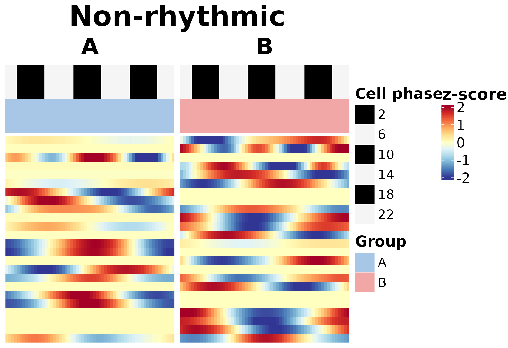
plot(hm_module, module_id = 1)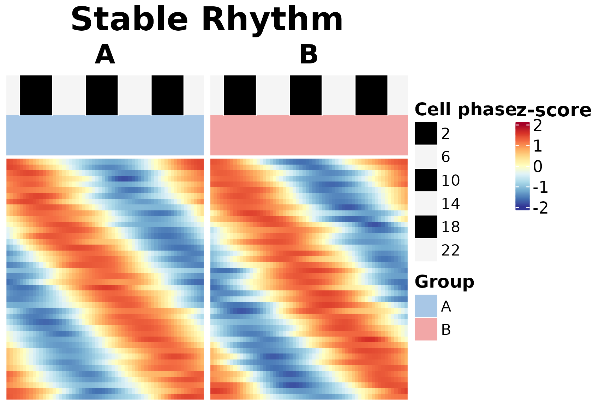
plot(hm_module, module_id = 2)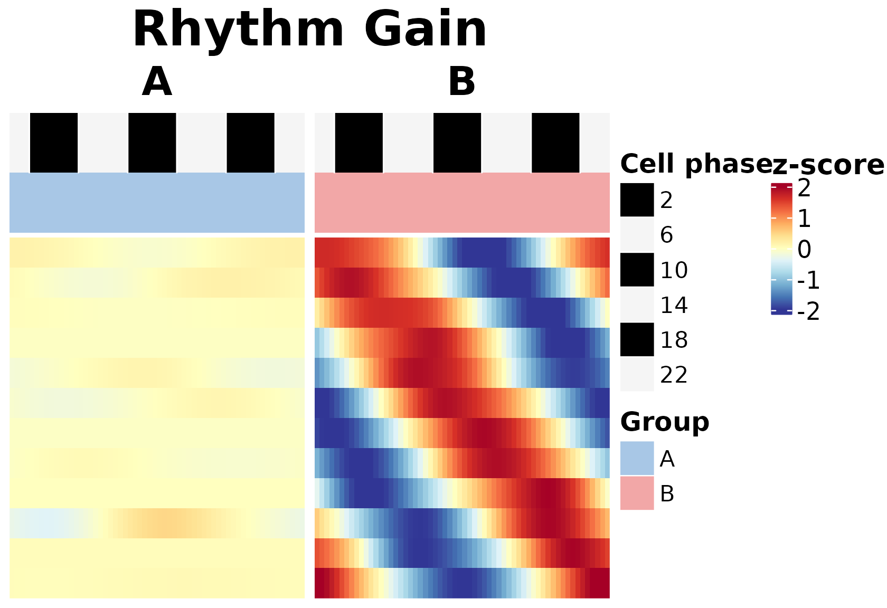
plot(hm_module, module_id = 3)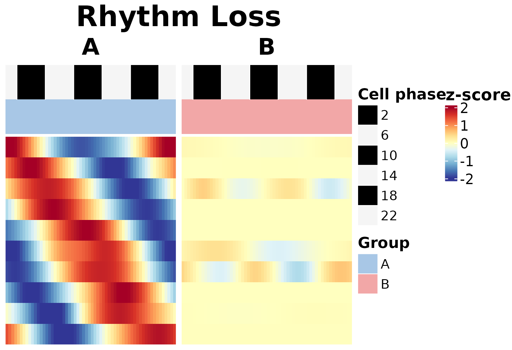
plot(hm_module, module_id = 4)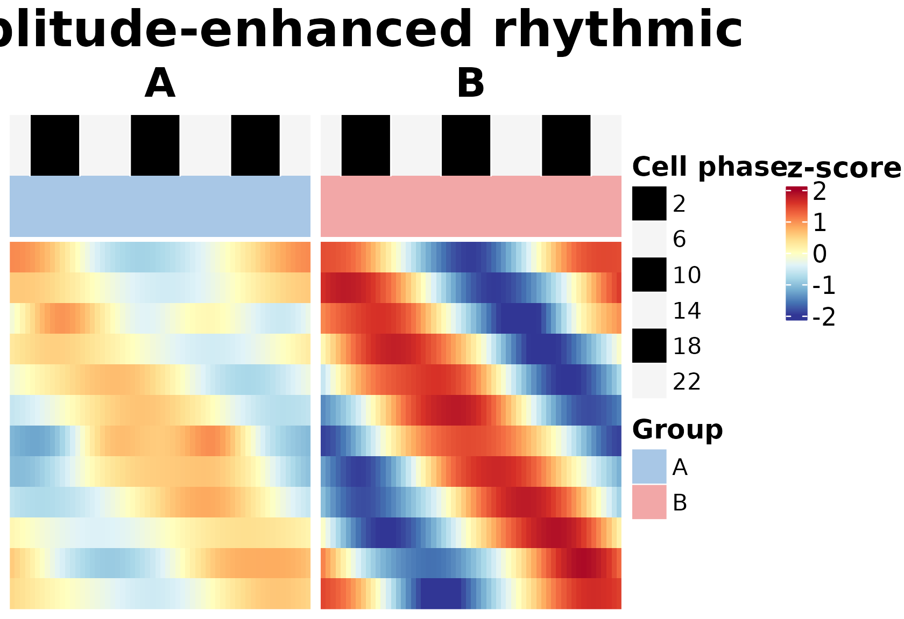
plot(hm_module, module_id = 5)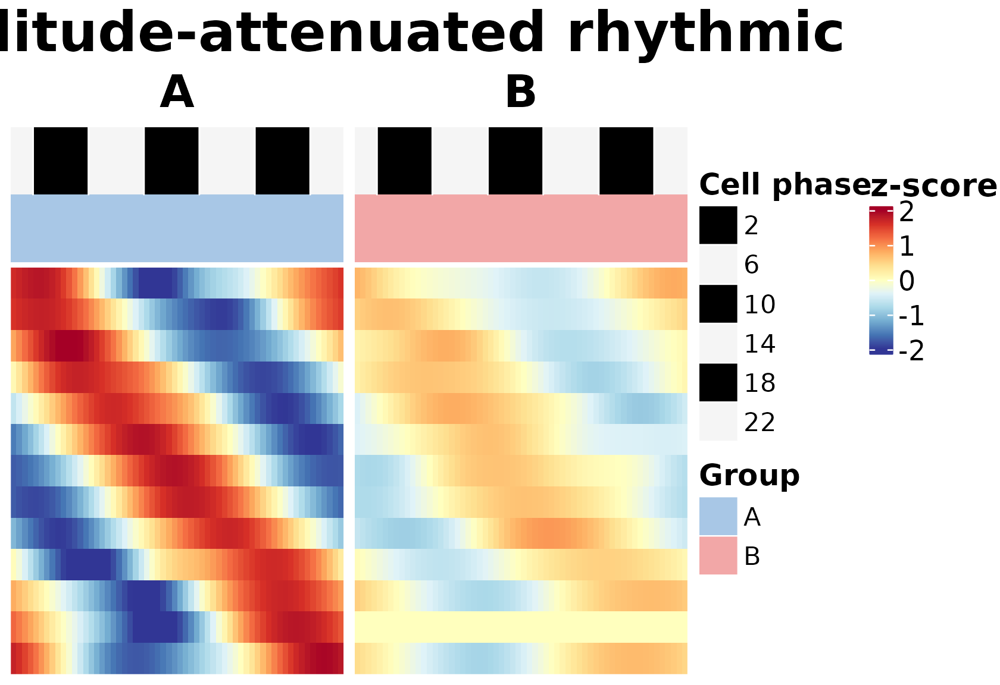
plot(hm_module, module_id = 6)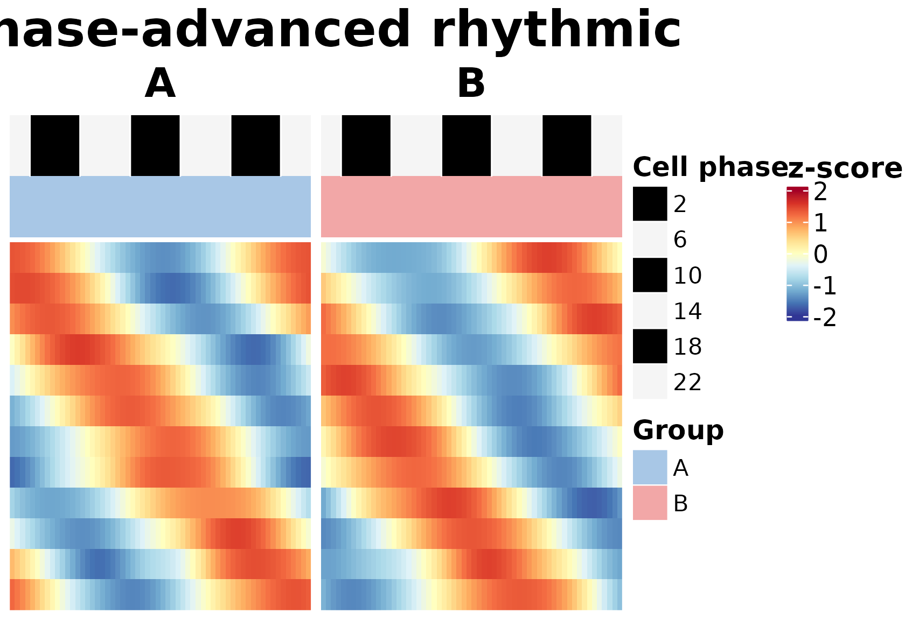
plot(hm_module, module_id = 7)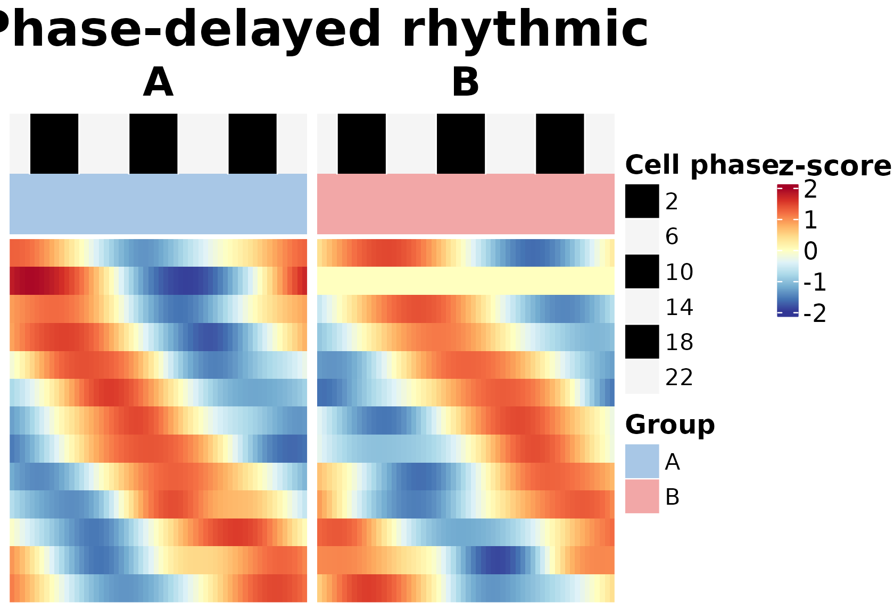
The heatmaps are useful for checking whether genes assigned to each module show consistent phase-resolved expression patterns across the compared conditions.
Module polar plot
The polar plot visualizes rhythmic remodeling in amplitude-phase space.
p_polar <- plot_module_polar(
gene_meta = res_module$module_result,
module_id = 7,
group1 = "A",
group2 = "B"
)
p_polar$plot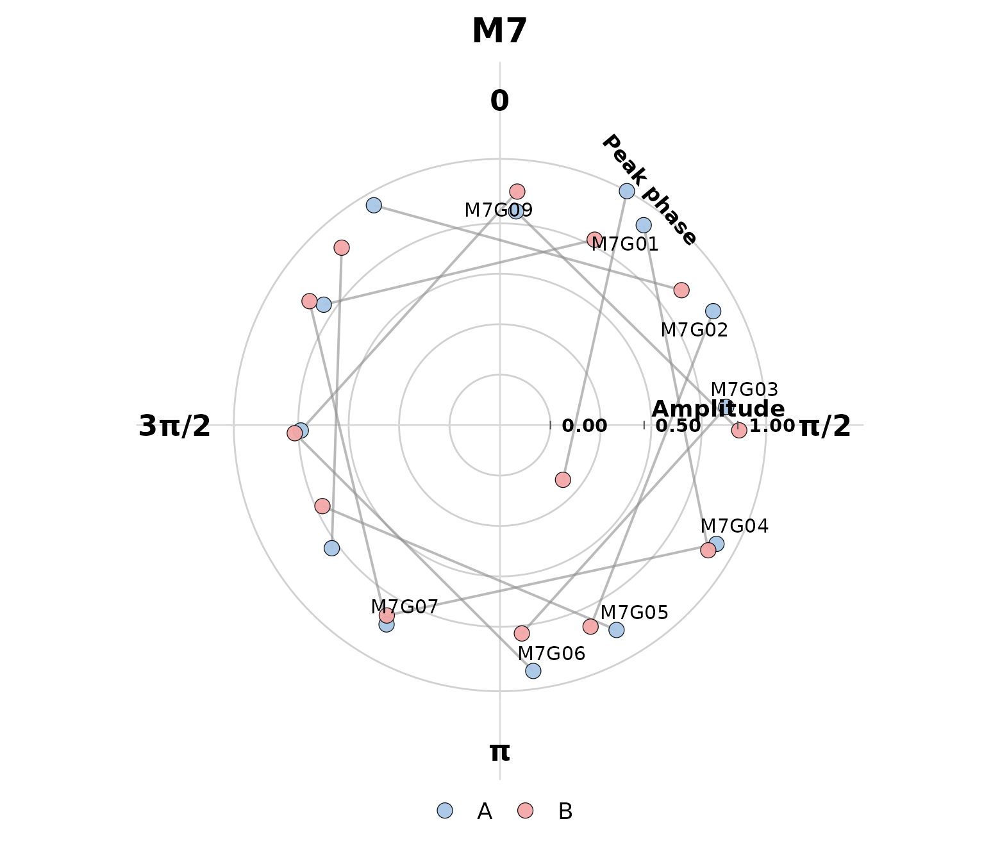
This plot helps inspect how genes in a selected module are distributed by rhythmic amplitude and phase.
Recommended minimal workflow
The minimal core workflow is:
data("srb_example_data")
count <- srb_example_data$Count
metadata <- srb_example_data$meta
res_phase <- infer_cell_phase(
count = count,
metadata = metadata,
ZT_by = "ZT",
strata_by = "celltype",
Species = "mouse",
setseed = 1,
Verbose = FALSE
)
cell_use <- as.character(metadata$celltype) == "1"
res_param <- infer_gene_param(
count = count[, cell_use, drop = FALSE],
metadata = metadata[cell_use, , drop = FALSE],
theta_pred = res_phase$theta_pred[cell_use],
r_cell = res_phase$r_cell[cell_use],
strata_by = "condition",
ZT_by = "ZT",
sample_by = "sample",
sample_boot_by = "ZT",
B = 3,
n_worker = 1,
setseed = 1,
Verbose = FALSE
)
res_module <- infer_rhythm_module(
param_wide = res_param$param_wide,
compare_by = "condition",
group1 = "A",
group2 = "B",
out_dir = NULL,
Verbose = FALSE
)
hm_module <- plot_module_heatmap(
count = count[, cell_use, drop = FALSE],
res_phase = res_phase[cell_use, , drop = FALSE],
gene_meta = res_module$module_result,
metadata = metadata[cell_use, , drop = FALSE],
group_by = "condition",
group1 = "A",
group2 = "B"
)
plot(hm_module, module_id = 0)Extension workflows
The following analyses are extensions of the core workflow. They are introduced here for orientation and described in separate tutorials.
Extension 1: one-vs-rest rhythmic program discovery
The one-vs-rest workflow is designed for heterogeneous tissues or multi-cell-type datasets. It compares each target cell type against all remaining cell types.
res_ovr <- infer_ovr_rhythm(
count = count,
metadata = metadata,
theta_pred = res_phase$theta_pred,
r_cell = res_phase$r_cell,
group_by = "celltype",
ZT_by = "ZT",
target_groups = "1",
sample_by = "sample",
sample_boot_by = "ZT",
B = 3,
n_worker = 1,
setseed = 1,
Verbose = FALSE
)
head(res_ovr$ovr_result)Extension 2: DTW-based phase-distribution similarity
The DTW workflow compares circular cell-phase distributions across celltype-by-condition combinations.
dtw_res <- run_dtw_similarity(
res_phase = res_phase,
metadata = metadata,
celltype_by = "celltype",
group_by = "condition",
min_cell = 10,
Verbose = FALSE
)
head(dtw_res$histogram)
dtw_res$similarityExtension 3: circular phase-concentration rho analysis
The rho workflow summarizes how concentrated inferred cell phases are within cell types and conditions.
rho_res <- run_phase_rho(
res_phase = res_phase,
metadata = metadata,
celltype_by = "celltype",
group_by = "condition",
theta_by = "theta_pred",
group_levels = c("A", "B"),
min_cell = 10,
Verbose = FALSE
)
rho_resOutput summary
The core workflow produces three main result objects:
| Object | Description |
|---|---|
res_phase |
Cell-level inferred circadian phase and reliability statistics |
res_param |
Gene-level rhythmic parameter estimates |
res_module |
Differential rhythm-state module assignments |
The extension workflows produce additional result objects:
| Object | Description |
|---|---|
res_ovr |
One-vs-rest rhythmic program discovery results |
dtw_res |
DTW-based phase-distribution similarity results |
rho_res |
Group-level circular phase-concentration summaries |
rho_res_sample |
Sample-level circular phase-concentration summaries |
Notes for real datasets
For real single-cell datasets, users should provide:
- A gene-by-cell count matrix.
- Cell-level metadata.
- A sampling time column, such as
ZT. - A stratum column for phase inference, such as cell type, sample, tissue region, or another biologically meaningful grouping variable.
- A group or condition column for downstream comparison.
Recommended analysis strategy:
- infer cell phases globally or within appropriate strata;
- estimate gene-level rhythmic parameters within a biologically interpretable context;
- run module analysis for defined two-group comparisons;
- use one-vs-rest analysis for cell-type-specific rhythmic programs;
- use DTW and rho analyses for phase-distribution and phase-prioritization questions.
Session information
sessionInfo()
#> R version 4.6.2 (2026-10-29)
#> Platform: x86_64-pc-linux-gnu
#> Running under: Ubuntu 24.04.5 LTS
#>
#> Matrix products: default
#> BLAS: /usr/lib/x86_64-linux-gnu/openblas-pthread/libblas.so.3
#> LAPACK: /usr/lib/x86_64-linux-gnu/openblas-pthread/libopenblasp-r0.3.26.so; LAPACK version 3.12.0
#>
#> locale:
#> [1] LC_CTYPE=C.UTF-8 LC_NUMERIC=C LC_TIME=C.UTF-8
#> [4] LC_COLLATE=C.UTF-8 LC_MONETARY=C.UTF-8 LC_MESSAGES=C.UTF-8
#> [7] LC_PAPER=C.UTF-8 LC_NAME=C LC_ADDRESS=C
#> [10] LC_TELEPHONE=C LC_MEASUREMENT=C.UTF-8 LC_IDENTIFICATION=C
#>
#> time zone: UTC
#> tzcode source: system (glibc)
#>
#> attached base packages:
#> [1] stats graphics grDevices utils datasets methods base
#>
#> other attached packages:
#> [1] tidyr_1.3.2 tibble_3.3.1 dplyr_1.2.1
#> [4] Matrix_1.7-6 purrr_1.2.2 future_1.82.0
#> [7] scRhythmBayes_2.0.0
#>
#> loaded via a namespace (and not attached):
#> [1] RColorBrewer_1.1-3 shape_1.4.6.1 jsonlite_2.0.0
#> [4] magrittr_2.0.5 spatstat.utils_3.2-5 farver_2.1.2
#> [7] rmarkdown_2.32 GlobalOptions_0.1.4 fs_2.1.0
#> [10] ragg_1.5.2 vctrs_0.7.3 ROCR_1.0-12
#> [13] spatstat.explore_3.8-3 htmltools_0.5.9 sass_0.4.10
#> [16] sctransform_0.4.3 parallelly_1.50.0 KernSmooth_2.23-27
#> [19] bslib_0.12.0 htmlwidgets_1.6.4 desc_1.4.3
#> [22] ica_1.0-3 plyr_1.8.9 plotly_4.12.1
#> [25] zoo_1.9-1 cachem_1.1.0 igraph_2.3.4
#> [28] mime_0.13 lifecycle_1.0.5 iterators_1.0.14
#> [31] pkgconfig_2.0.3 R6_2.6.1 fastmap_1.2.0
#> [34] clue_0.3-68 fitdistrplus_1.2-6 shiny_1.14.0
#> [37] digest_0.6.39 colorspace_2.1-4 furrr_0.4.0
#> [40] S4Vectors_0.50.3 patchwork_1.3.2 Seurat_5.6.0
#> [43] tensor_1.5.1 RSpectra_0.16-2 irlba_2.4.1
#> [46] textshaping_1.0.5 labeling_0.4.3 progressr_1.1.0
#> [49] spatstat.sparse_3.2-0 httr_1.4.9 polyclip_1.10-7
#> [52] abind_1.4-8 mgcv_1.9-4 compiler_4.6.2
#> [55] withr_3.0.3 doParallel_1.0.17 S7_0.2.2
#> [58] fastDummies_1.7.6 MASS_7.3-66 rjson_0.2.23
#> [61] tools_4.6.2 lmtest_0.9-40 otel_0.2.0
#> [64] httpuv_1.6.17 future.apply_1.21.0 goftest_1.2-3
#> [67] glue_1.8.1 nlme_3.1-171 promises_1.5.0
#> [70] grid_4.6.2 Rtsne_0.17 cluster_2.1.8.3
#> [73] reshape2_1.4.5 generics_0.1.4 gtable_0.3.6
#> [76] spatstat.data_3.1-9 data.table_1.18.6.1 sp_2.2-4
#> [79] utf8_1.2.6 BiocGenerics_0.58.1 spatstat.geom_3.8-3
#> [82] RcppAnnoy_0.0.23 ggrepel_0.9.8 RANN_2.6.3
#> [85] foreach_1.5.2 pillar_1.11.1 stringr_1.6.0
#> [88] spam_2.11-4 RcppHNSW_0.7.0 later_1.4.8
#> [91] circlize_0.4.18 splines_4.6.2 lattice_0.23-1
#> [94] survival_3.8-12 deldir_2.0-4 tidyselect_1.2.1
#> [97] ComplexHeatmap_2.28.0 miniUI_0.1.2 pbapply_1.7-5
#> [100] knitr_1.52 gridExtra_2.3.1 IRanges_2.46.0
#> [103] scattermore_1.2 stats4_4.6.2 xfun_0.62
#> [106] matrixStats_1.5.0 stringi_1.8.9 yaml_2.3.12
#> [109] evaluate_1.0.5 codetools_0.2-20 cli_3.6.6
#> [112] uwot_0.2.5 xtable_1.8-8 reticulate_1.47.0
#> [115] systemfonts_1.3.2 jquerylib_0.1.4 Rcpp_1.1.2
#> [118] globals_0.20.0 spatstat.random_3.5-2 png_0.1-9
#> [121] spatstat.univar_3.2-0 parallel_4.6.2 pkgdown_2.2.1
#> [124] ggplot2_4.0.3 dotCall64_1.2 listenv_1.1.0
#> [127] viridisLite_0.4.3 mvtnorm_1.4-2 scales_1.4.0
#> [130] ggridges_0.5.7 crayon_1.5.3 SeuratObject_5.4.0
#> [133] GetoptLong_1.1.1 rlang_1.3.0 cowplot_1.2.0